I'm a fourth-year student studying a Bachelor's of Science degree in Computer Science and Philosophy with a Minor in Mathematics at Northeastern University. I'll be graduating May 2026. My journey so far has been defined by my north star: building technology that guides and empowers people to intuitively make better decisions and live good lives. Right now, I'm finishing up my final semester at Northeastern, spending quality time with friends and mentoring at TAMID. Outside of my life in tech, I'm taking too long to finish the Dune series, and spending time in the great outdoors via hiking, cycling and snowboarding.
My early education was founded on the principle that to grow the logical mind, you grow it through math. I honed my skills in competitive math, and developed a love for it at Hampshire College Summer Studies in Mathematics, where I really began to appreciate the quirks and scope of the field. That curiosity pulled me into computer science, where theory and application collided in ways that felt both rigorous and creative. In 2020, I was accepted into the MIT PRIMES's Computer Science Research track where I worked on a project called Non-Fungible Objects (NFO): Hard-to-Counterfeit Virtual Assets Based On Trusted-Hardware. Then, at Northeastern, my world expanded: I dove into full stack web development and AI, soon becaming obsessed with building systems as it became the medium for both my quantitative and creative expression. Around the time, I read Superintelligence: Risks, Dangers, Strategies which made me realize my contribution as an engineer could change the world as technology shapes society. This idea carried me through the past few years as I worked in industry to strengthen my technical skills from the best mentorship I could get (e.g. Ampion, PBC, UKG, LinkedIn, Google) and then put my skills to purpose through research with Professor Patterson's work on his code synthesizer project combating automation bias and the Plural Connections Group where worked on fostering intellectual humility online. All in all, my work isn’t just about writing code—it’s about exploring how technology shapes the way we think, interact, and solve problems. And that’s what keeps me excited for what’s next.
PROFESSIONAL EXPERIENCE
ChatGPT Lab Member
Alpha tester for ChatGPT Browser, ChatGPT Study Mode, Imagegen 2.0, ChatGPT Instant
Software Engineering Intern @ Google
Working in Google's Cloud Application team, on Google Groups APIs team.
Software Engineering Intern @ LinkedIn
Working in LinkedIn's Product Engineering organization, on the Trust Data Foundations team within Trust & Safety.
Research Engineer @ Plural Connections Group
First author poster accepted into IC2S2. Working at Northeastern University under Professor Nabeel Gillani to foster intellectual humility online.
Software Engineering Intern @ UKG
Worked at Lowell HQ on Cloud Observability and Realiability Tooling team.
Software Engineering Intern @ Ampion
Worked on the Subscriber Experience team to conduct full rehaul and modernization of main website.
Multivariable Calculus Teacher Assistant
Graded weekly quizzes for over 60 students and provided solution manual feedback for Professor Seo.
LEADERSHIP ROLES
Director of Tech Consulting of TAMID
Scoped project for 6 developers and teach weekly lessons in algorithms and technical interview preparation to peers.
Executive Vice President of TAMID
Oversaw operations for 150+ member club, led 13 executive leaders and 7 committees to drive strategic initiatives in recruitment, finances, social and professional engagement.
VP of Operations & Finance of TAMID
Handled back-end logistics of TAMID Consulting Club involving finances, calendar, room bookings, recruitment data, etc.
Tech Consulting Foundations Instructor of TAMID
Educated a weekly class of 13 students on web development fundamentals: Git/Version Control, HTML, CSS, JavaScript, React, and APIs.
RESEARCH
Research Assistant at Plural Connections Group
Same desc. as Research Engineer position at Plural Connections Group under Professional Experience.
Research Assistant to Professor Daniel Patterson
Prototyped an environment to prevent automation bias for integrated human-AI optimized Python programming leveraging ChatGPT API.
Human Autonomy in Digital Social Networks and Recommender Systems
Independent research project advised by Professor Patterson exploring autonomy, a new framework for defining of autonomy, and applying it to social media platforms that use recommender systems. Created and presented poster at RISE Undergraduate Conference Presentation on April 11th, 2024.
Computer Science Researcher at MIT CSAIL
Invented research paper on secure hardware to ensure digital ownership on virtual objects using crytopgrahy. Specified 3 security mechanisms to unwanted side-channels and logic using cryptographic protocols analysis.
WRITTEN WORK
Erosion of Autonomy in Algorithmic Recommendation Systems
A dissection of the erosion of autonomy in algorithmic recommendation systems, how they are incompatible, and state an urgency of legal action.
Free Speech is a Triangle Literature Review
A summary of the Jack Balkin piece "Free Speech is a Triangle," where I propose a technological solution of using decentralized social platforms to safeguard users' freedom of speech against what he deemed "new-speech regulation" harms.
CLICK TO EXPLORE TECHNICAL PROJECTS
Social Cues Intervention on Reddit-Like Platform
Deployed and developed full-stack app on AWS mimicking Reddit to test hypothesis on use of social cues to increase intellectual humility in online discussions on U.S. politics. Worked with Dartmouth NLP Group to develop and fine-tune an intellectual humility classifier on political speech.
Truth Agent
Pioneering browser extention AI system to foster critical thinking skills by measuring real-time online misinformation on the page. Submitted to Google Gemini Developer Competition, pending results.
EduFlex @ NU AI Hackathon
1st Place Winner. Empowering public free online computer science education to lower the barrier of entry for low-income students who don’t have access to prestigious university resources using NLP.
Tripartite Soul AI
Diagnosis your tripartite soul and speak with Plato to make your soul most just. Uses Plato's Republic and his dialogues.
Synth Research
Created prototype which queries python code from ChatGPT to match function specification. Wrote testing system which requeries ChatGPT with error messages with faulty implementations. Deployed Blackjack Game lab for 50 students to use to test the prototype and provide feedback on their experience.
Non-Fungible Objects (NFO): Hard-to-Counterfeit Virtual Assets Based On Trusted-Hardware
Research that introduces a new technology for virtual assets by securely tying their initialization, development and exchange to our secure hardware. We assert that our version of virtual ownership is stronger than Non-Fungible Tokens' (NFT) version.
High Resolution Image Cropping
Tool to crop images without losing resolution. Used optimized graph traversal techniques and object-oriented design principles to remove seams of the least important pixels on an image, preventing loss of resolution quality of the image when cropping.
Multilingual Speech Generation
Lowers the language barrier by enabling personalized conversation, which can provide speakers of other languages better access to fair education, employment, public services, and medical attention. Achieved 83% speech identification accuracy using a KNN model and through researching zero-shot generation.
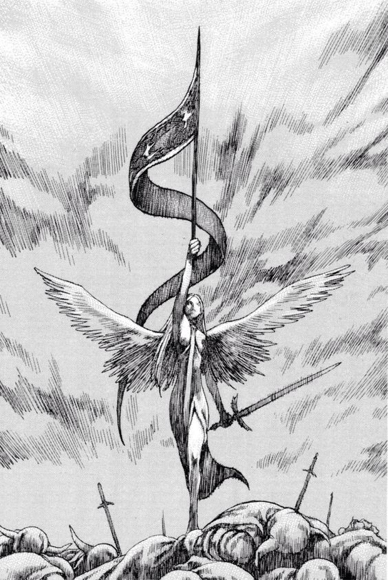
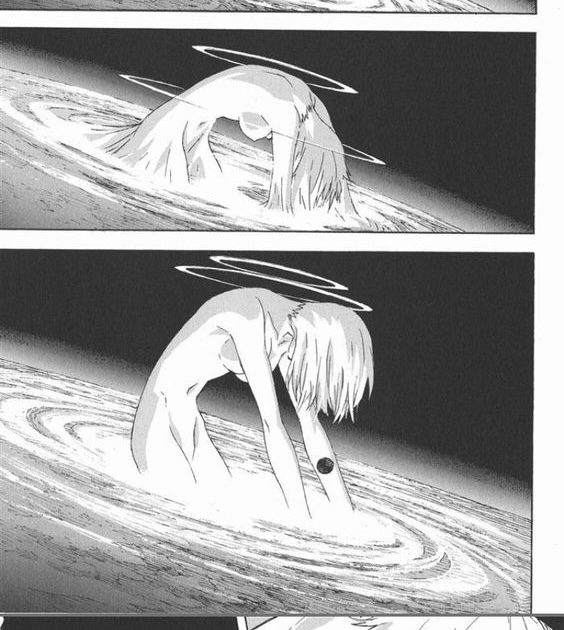
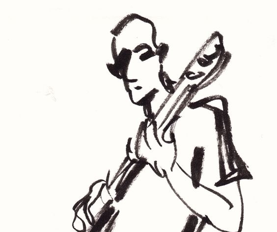
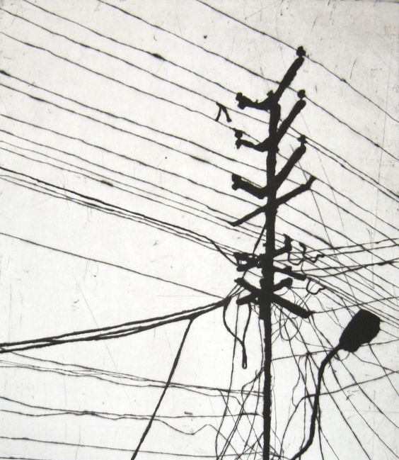
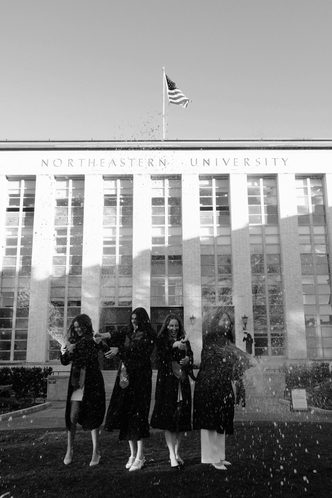
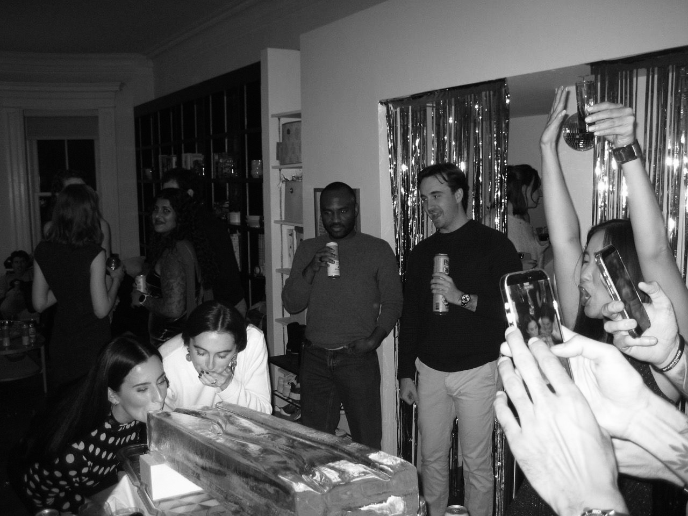
NON-FICTION BOOKS
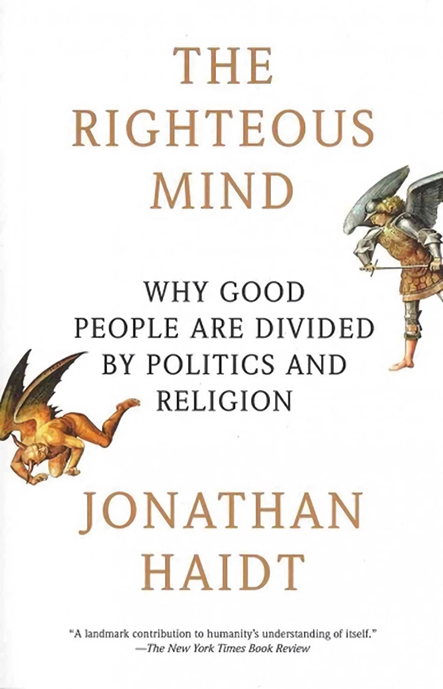
The Righteous Mind
by Jonathan Haidt (along with A Treatise of Human Nature by Hume)
Haidt writes about the psychology of our moral standards and why people can hold vastly different opinions. Through his examples, it becomes strikingly compelling to believe that our moral responses—which crystallize into political beliefs—are not rooted in pure reason but rather are largely dictated by intuitions, evolutionary foundations, and culture-guided.
This book profoundly humbled me. As someone who was quick to fire to defend moral beliefs, this book changed the way I viewed reason’s role in bridging divides. Only by learning how to abandon self-righteousness while still remaining committed to our convictions will we be able to understand others.
I would recommend this book to anyone who wants to become more politically active. The book doesn't provide any political guidance, but it does provide necessary context to begin understanding people who hold seemingly foreign ideas to you and prevent you from further polarizing the already toxic political landscape in the U.S.
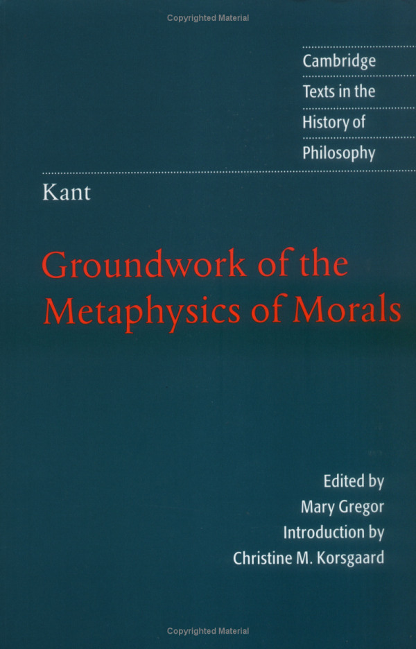
Groundwork of the Metaphysic of Morals
by Immanuel Kant
Interestingly, I learned and studied Kant after reading Haidt and Hume. Kant's work was extraordinarily "programmatic," in the sense that his process is deeply logical and makes more sense the more you mull over it. Although I often found myself hating reading his work, I remain in awe towards his contributions to the foundations of morality. I'm particularly convinced by his definition of autonomy and interested in Kant's Formula of Humanity. When understanding harms against autonomy in tech, I reference Kant's groundwork.
Nearly all modern, western, moral or political philosophers are in some conversation with Kant's Groundwork. As a result, I would recommend anyone interested in moral or political philosophy to read Kant.
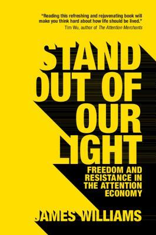
Stand Out of Your Light
by James Williams
After reading Shuboff's viral paper on Big Tech survelliance economy, I was fascinated by the relationship between attention and autonomy. This book offered a fascinating of such account.
One of James' most interesting claims is the importance of leisure free from external manipulation in maintaining our autonomy. In a world where free time for reflection is steadily declining, this book pushed me to intentionally carve out moments for “purposeless” mind-wandering. Whether through meditation or simply resisting the urge to fill every idle second with stimulation, like checking my phone while brushing my teeth.
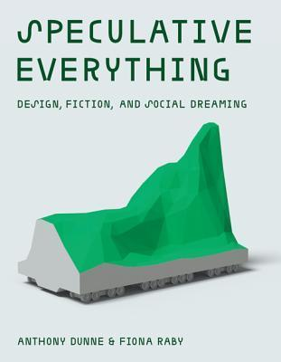
Speculative Everything: Design, Fiction, and Social Dreaming
by Anthony Dunne
I read this book when creating a project called Archailects which is a speculative newspaper set in the future that reports on tech. I was trying to be more coherent in explaining the purpose of such a creative, otherwordly project; It being that speculative design is one that shapes our understanding of what the possibilities our future could hold, and what our ideals should be.
This book is a requirement for all creatives. It answers the question to why we create things that may not have immediate utility.
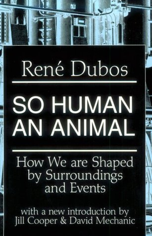
So Human an Animal
by Rene Dubos
Pulitzer Prize for General Nonfiction in 1969. Dubos demonstrated the importance of environments to our humanity, and the attention we must put towards our day to day interactions to become good humans. This idea sparked the lifelong goal of designing better technology for humans to intuitively do good things. Another book, a more modern one, that pairs nicely with this is Nudge by Cass Sunstein.
I found the anthropological account, evolutional theory, and psychological experiments very entertaining. It made me feel less like we are profoundly intelligent beings, but more like animals that more often than not merely responding to our environment.
FICTION BOOKS
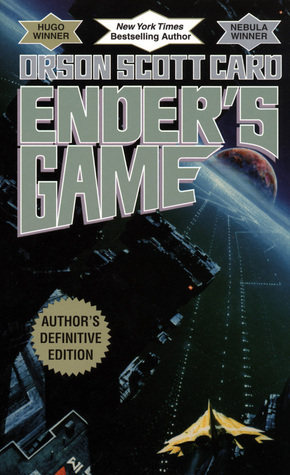
Ender's Game
by Orson Scott Card
This characters of the book are incredibly brilliant, and existing in their minds and their odyssey was extraordinary thrilling. This book is less about the aliens that humanity is about to confront, but about the human politics and the ethics of going to war with an intelligent species. We unravel this philosophy with our main character, Ender, as he navigates a unique form of military space school. Ender seems to fill the classic Chosen One trope, but his experience is violent and psychological, one that makes it unclear if he is the Chosen One to do something morally good or bad.
It cannot be left unsaid that Orson Scott Card, unfortunately, is someone who holds harmful opinions that I do not agree with.
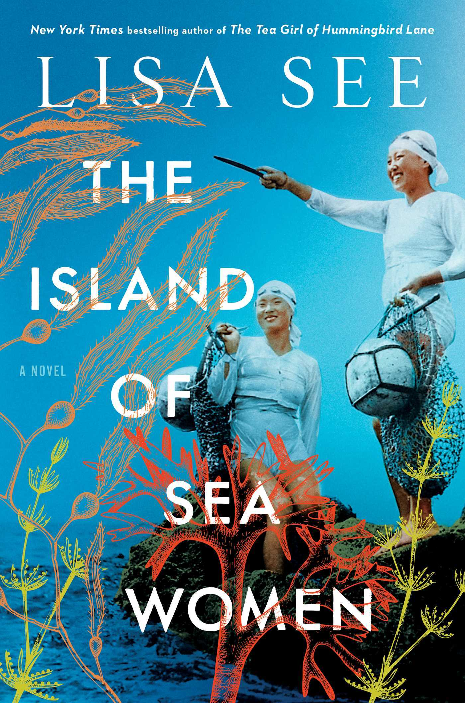
The Island of Seawomen
by Lisa See
A delicate story about female divers (haenyo) of Jeju Island as they face Japanese colonization and cultural upheaval spanning decades. It explores a deep friendship in the face of personal and political trauma.
The traditions of the sea women of Jeju Island were entirely unique to anything I've ever been exposed to. Every character had an arc that I was attached to. It was one of the first and only books I've ever cried to. I felt the grief the characters felt, teased out masterfully by Lisa See's craft.
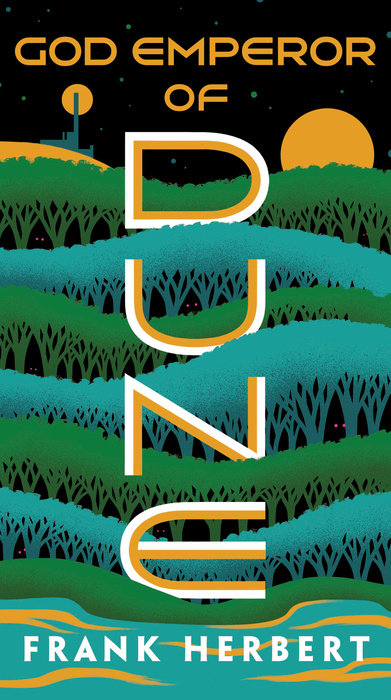
God Emperor of Dune
by Frank Herbert
The culmination of Paul's prophecy, planted in book one, comes to it's peak in the God Emperor of Dune. It's an epic story of a great metamorphosis in all regards; environmental, political, and personal.
I found it to be fascinating to be placed in the mind of an all-knowing, all-powerful creature. Every chapter begins with an excerpt from a fictional scripture or analysis that makes you feel as if the Dune universe had existed for thousands of years in real life with real historians, religious believers, technologists, etc. Herbert is a genius creative, and his ingenuity is on full display in this fourth book of the series.
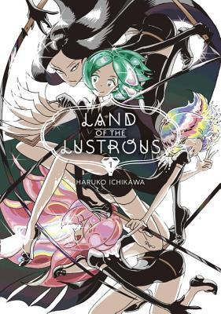
Land of the Lustrous
by Haruko Ichikawa
This is a Japanese manga about immortal humanoid-stone lifeform led by a father-figure, God-like being who seems to have a strange relationship with their mortal enemy, a celestial humanoid lifeform. One of the few things that made this story stand out from the getgo was the uniqueness of the enemy.
At first glance, it seems completely otherwordly. However, as the story reveals the origins of these creatures, you'll see that this story is deeply grounded in humanity as we know it.
It follows themes of identity (Ship of Theseus) and the pain of existence through the disfiguration of our main character, Phos. The inclusion of Buddhist philosophy regarding attachment, suffering, and enlightenment along with the unusual, remarkable universe made this story unforgettable.
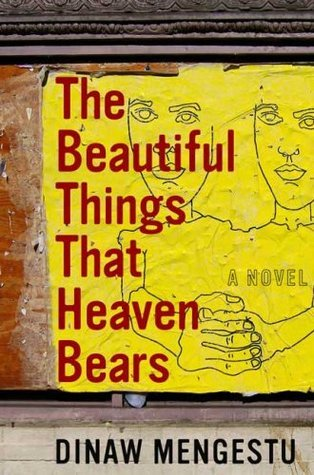
The Beautiful Things That Heaven Bears
by Dinaw Mengestu
I spent nearly all of high school not interested in reading, but this book got me out of my slump so I have to give credit to where credit's due.
This story follows an Ethiopian immigrant in Washington D.C. struggling with loneliness, adapting to a new culture, and feeling a deep sense of loss of identity. It's not a flashy story; it's slow paced, and quiet. It examines small interactions between his neighbors and flashbacks to his life in Ethiopia. Through this, Mengestu is able to create a complex feeling of bittersweetness, of a tragedy that is not grand.
The writing is raw and real. I reflected a lot about the life my parents must've faced when they immigrated to the U.S. Mengestu, an immigrant himself, has insight and the craft to be able to explain the nuances beautifully.
FILMS
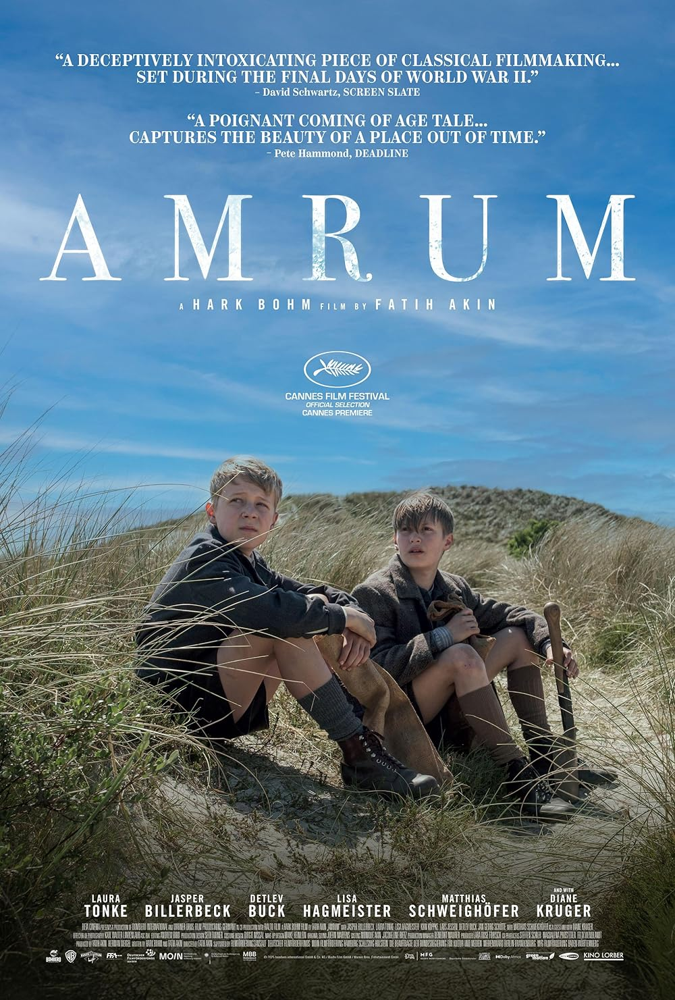
Amrum
by Faith Akin
This movie takes place in Amrum Island, Germany in 1945 when World War 2 ends. It follows a boy who is trying to calm his tormented mother who is anguished at the fall of Hitler, as their father seemed to be a high ranking Nazi officer or researcher in Nazi ideology.
The setting of Amrum Island is idyllic, occupied by many people who don't support the war. There are many stunning shots of the nature of the place and short explorations of life on this island. The slow-paced beauty is one of why I loved the movie so much.
I also loved this movie because it depicted a side of how confusing political transition can be. It is ultimately a coming of age story of a boy born in between political strife represented by his mother versus his community. I love a good coming of age story with beautiful cinematography that tackles nuanced themes like tackling indoctrination and moral awakening.
The Handmaiden
by Park Chan-wook
This movie was the best kind of rollercoaster from top to end. It follows con-artists trying to swindle a woman out of her inheritence through seduction. It had twists I never expected.
The pacing in the form of 3 parts had me lapping up every second I could get from this movie. It's sensual, it's psychological and funny. If not for the electric plot, this is also a cinematographic masterpiece--every shot is beautifully lit, with a coherent color palette that makes this like a Michelin star sensory experience.
And of course, the main theme in this story is power and control, and how the women in the show thwart the typical male patriarchy for their ultimate ascension. Peak.

Eternal Sunshine of the Spotless Mind
by Michel Gondry
A magical realism, psychological romance set in a scifi world where anyone could undergo a treatment to "forget" any memory, person or event. It follows our main character, Joel, who is trying to forget his failed relationship with a woman, Clementine. This movie is playful and explores the feelings of something so universal--heartbreak--in a way that is raw and raises the question of whether heartbreak is necessary.
The choreography of the movie was so wacky and unexpected so demonstrate the treatment and the relationship. Not only that, but it put criticism on the immature, "break-up" fantasty like "I wish I never met them" or "I wish I could just forget it ever happened." Instead, it urges us to rethink the purpose of heartbreak and sitting with the grief of the great loss of love. It's a wonderful message.

Blade Runner
by Ridley Scott
I love Burtalist megastructures in juxtaposition with retro-mid-century interiors (Blame!, a manga whose images are also featured throughout my website, and Dune also has this vibe) and Blade Runner really became my reference board for this aesthetic. A perfect example of this was the golden-lit interiors of the Wallace Corporations headquarters with its giant monolithic concrete spaces, geometric symmetry and characteristic furniture.
This movie is one of the introductory pieces of artificial vs. humanity and one of the main character's name is named Rachel, so boom, one of my favorites.
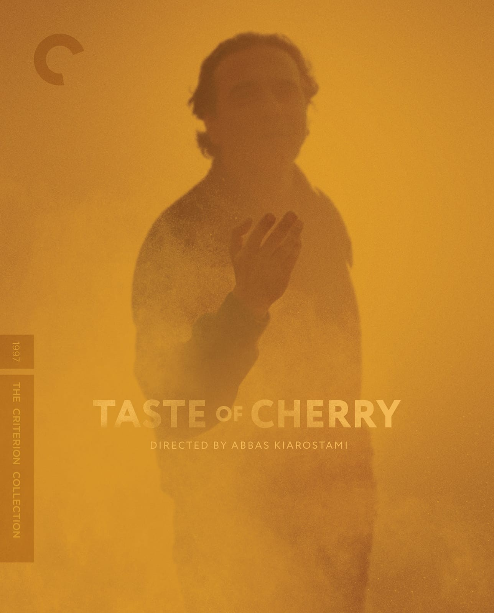
Taste of Cherry
by Abbas Kiarostami
The movie is about an Iranian man searching for someone who will bury him after he commits suicide. It follows him in a car, often in long stretches of uncut filming, meeting all sorts of people who have different responses to his request.
The experience was rather zen and detatched. We learn nothing about the man's motives for suicide. I found this to be very raw and real. The movie is not preaching against suicide, but it captures the audience with the little tendrils of human connection that might convince someone to delay death. The movie is undecided enough for people to make drastically different conclusions, though. It's what makes it intellectually interesting.
ESSAYS
Do Artifacts Have Politics?
by Langdon Winner
Winner argues that technologies are not politically neutral because the design of any technology can shape social and political power, and patterns of human behavior. As a result, we should stop treating technology as a neutral tool and recognize that design decisions have political and moral decisions. Once we acknowledge this, we are equipped to build intentionally.
This paper gave me the theory and the articulation to talk about political technologies.
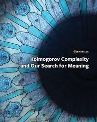
Kolmogorov Complexity and Our Search for Meaning
by Noson S. Yanofsky
This is a beautiful essay about how our search for meaning is like Kolmogorov Complexity--a search for the shortest possible description or program needed to generate something: There is no principled way to know when we've found the "best" explanation. We shouldn't focus on the most optimal choice or trying to make everything explainable. Life has a necessary uncertainty. Necessary because it's what keeps our lives permanently interesting and alive.
The Laws of Cyberspace
by Lawrence Lessig
This paper is what got me into tech policy and motivated me into utilizing my engineering skills for effective good. Lessig writes that the internet is regulated not just by laws, but by these 4 modalities, one being the code itself.
This paper, paired with Digital Borders by Tim Wu and Careless People by Wynn-Williams, shaped the way I saw my role in society as an engineer. It is clear that what we produce as engineers is one that changes politics at a global level fast. We have a duty to make sure we participate in a way that is good and safe. It is also exciting to know that I have the potential to enact such great change.
Famine, Affluence, and Morality
by Peter Singer
I was super interested in Effective Altruism in my senior year of high school and early years in college, and so, of course, I studied Peter Singer's works. Famine, Affluence and Morality is the piece that argues for creating a more demanding line between what is considered charity and what is considered morally obligated.
Singer argues that if we can prevent suffering or death without sacrificing something comparably morally important, then we are morally obligated to do so. The distance does not matter. I am still compelled to agree with this argument.
While I do not associate myself with the EA movement anymore, I think any moral agent in today's world who cares about doing good and not doing bad should read this and consider EA's arguments.
Hymn to Intellectual Beauty
by Percy Bysshe Shelley (Poem)
Just a lovely poem about the beautiful mind of the human race.
RESTAURANTS
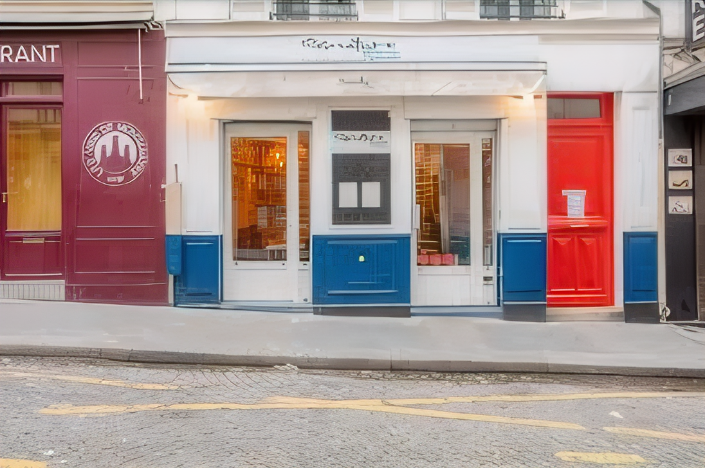
Signature
in Paris, France
My first Michelin star restaurant that made me understand what it means to be a foodie. The chemistry of flavors and intentionality of the ingredients were insane. I loved the Asian influences in my dishes--particularly the pork belly and the pear dessert soup at the end.
Bistrot Levante
in Barcelona, Spain
The best Mediterranean food probably. Their octopus dish was THE best octopus I've ever had--with a mix of spices, red oil, fresh herbs, chickpeas, it was the golden elixir that blessed my mouth.
Shizen
in San Francisco, USA
This place is vegan, and introduced me to a new dimension in which the vegetables could be in such great harmony that no meat could reach. I think the level of creativity in this restaurant must be celebrated as ingenuity in the food world.
Bar Volpe
in Boston, USA
Every single thing was a hit. The wine pairing, the lemon-y crab pasta, the truffle aranchini with a drizzle of honey, the tiramisu (which we ordered two of), and the company. I'm obsessed and in luck that this is just in town.
Hunan Impression
in San Jose, USA
This list would not be complete without a Hunan restaurant. As a lover of the cuisine, I absolutely adored Hunan Impression--I went at least 4-5 times when I lived in the Bay Area for 6 months. The spicy grilled fish was immensely aromatic and numbing which left my mouth watering after every bite.
MUSIC
Black Beatles
by Rae Sremmurd, Gucci Mane
:D
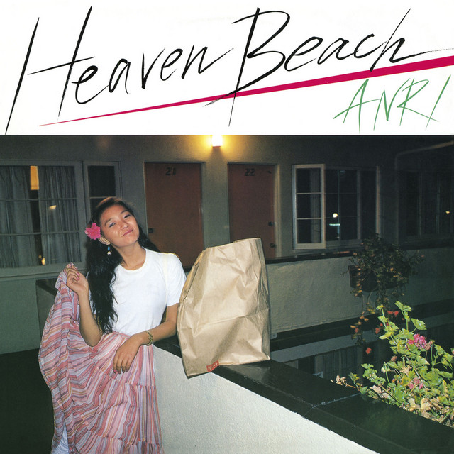
Last Summer Whisper
by Anri
Discovered and loved Japanese city pop all throughout high school during COVID. Wrote a lot of stories with this playing in the background during summer hot days locked up in my room.
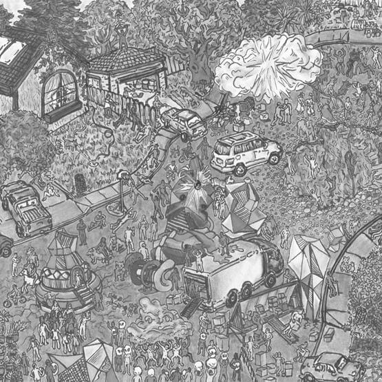
Do Ya Like
by Childish Gambino (Adele)
I loved it hearing this live.
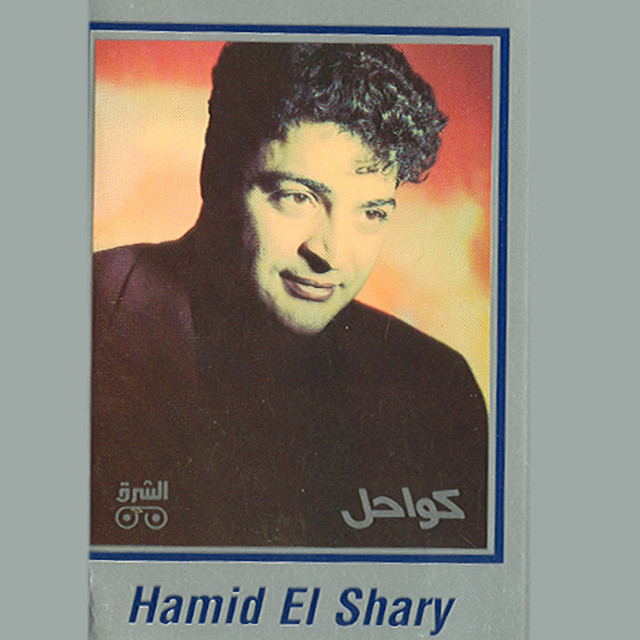
Ouda
by Hamid Al Shaeri
The instrumentals and the vocals on this are enchanting and made me fall in love with this groovy, arabic music genre. Went on a deep dive after this and appreciated everything I learned.
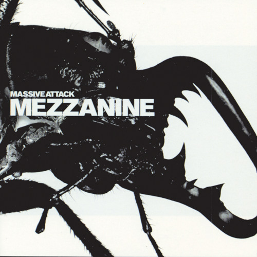
Black Milk
by Massive Attack & Elizabeth Fraser
Had a phase in which I was listening to rock and dark psychedelic music and absolutely obsessed over the female vocals over the grunge, persistent base in the background. I love this album in general, but this one in particular reminds me of those times.